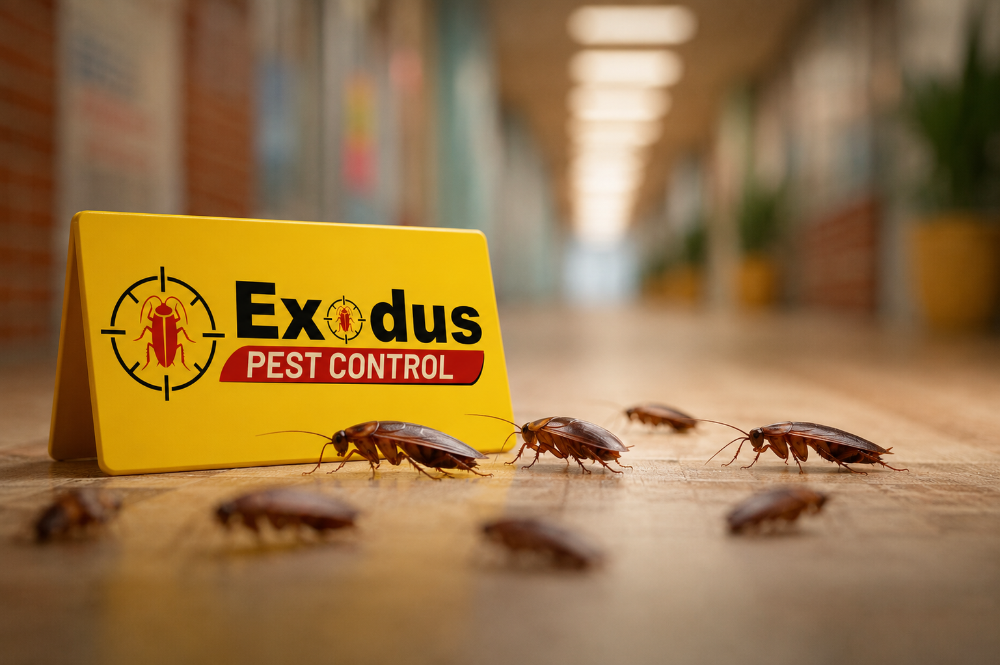
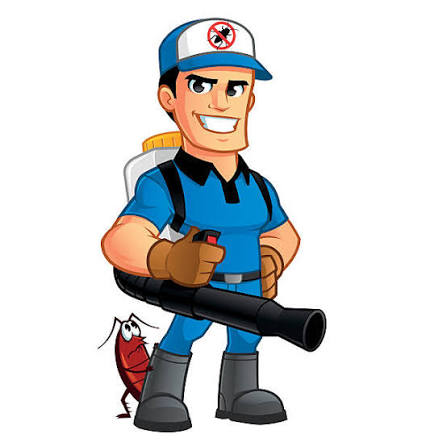

At Exodus Pest Control, we are committed to creating safer, healthier, and pest-free environments for homes, businesses, industries, and institutions. Based in Alwal, Hyderabad, we proudly provide professional pest management services across Hyderabad, Secunderabad, and throughout Telangana and Andhra Pradesh.
With over 8–10 years of industry experience, our team has earned a reputation for delivering reliable, effective, and long-lasting pest control solutions. We combine industry knowledge, modern treatment methods, and customer-focused service to ensure every property remains protected from unwanted pests.
Exodus Pest Control is operated by experienced professionals founder Zechariah (Kotaiah) and Nandi Sudhir, who are dedicated to maintaining the highest standards of service, quality, and customer satisfaction.

Choosing the right pest control company is essential for protecting your property and health. At Exodus Pest Control, we stand out through our commitment to quality service, customer satisfaction, and professional standards.
Our mission is to provide safe, reliable, and effective pest control solutions that protect families, businesses, and communities from harmful pests while delivering exceptional customer service and long-term peace of mind.
Our vision is to become one of the most trusted and respected pest control companies in India by consistently delivering high-quality services, adopting innovative pest management techniques, and building lasting relationships with our customers.
At Exodus Pest Control, our work is guided by strong values:
We proudly provide pest control services throughout:
Whether you require residential pest control, commercial pest management, industrial pest solutions, or preventive maintenance, our experienced team is ready to help.
We understand that every pest problem is different. That's why we conduct detailed inspections, identify the root cause of infestations, and implement customized treatment plans designed to deliver lasting results.
Our goal is not just to eliminate pests but to help prevent future infestations through professional advice, preventive measures, and ongoing support.
At Exodus Pest Control, customer satisfaction is at the heart of everything we do. We strive to provide dependable service, timely response, and solutions that exceed expectations.
If you're looking for a trusted pest control company in Hyderabad, Secunderabad, Telangana, or Andhra Pradesh, Exodus Pest Control is your reliable partner for complete pest management solutions. Let us help you protect what matters most with safe, effective, and professional pest control services.